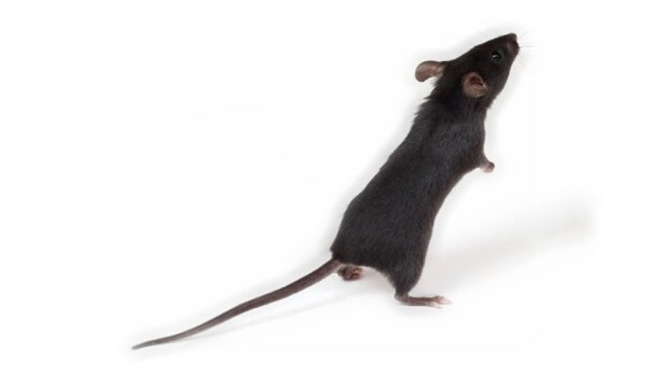
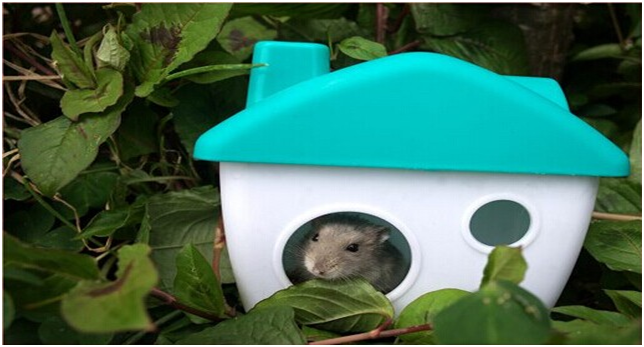
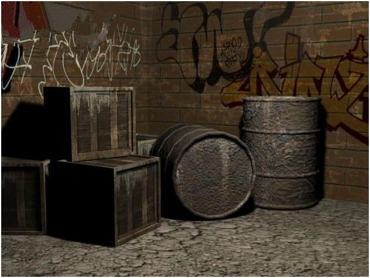
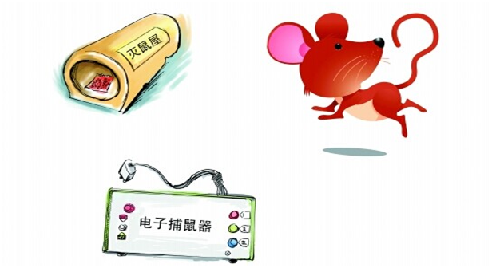
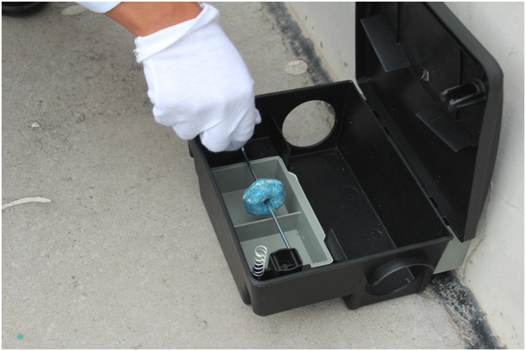

家里如何灭鼠及注意事项
发布时间：2019-05-17 10:29浏览次数：
除了人类以外，老鼠是哺乳类中繁殖最迅速且最成功的，而且老鼠是很多疾病的贮存宿主或媒介，据目前研究表明老鼠对人类传播的疾病有鼠疫、流行性出血热、钩端螺旋体、斑疹伤寒、蜱性回归热等57种。所以家里一旦发现老鼠，灭鼠行动就势在必行。

家里有老鼠怎么消灭?很多小区住房，特别是老小区很容易就闹老鼠，老鼠不仅偷吃东西而且破坏东西，传染疾病...最让人讨厌的就是繁殖的贼快。所以家里有老鼠的人家千万不能姑息它们，下面时代卫士来介绍下如何快速灭鼠。

1、 封堵老鼠入侵的通道
首先要判断老鼠是否已在家里做窝，还是只是过路的老鼠。如果你隔三差五就能看到老鼠，家里的东西也被咬坏，那就不要再想了，老鼠肯定在你家住下了。这时候就要注意观察，把家里可能是老鼠入侵的通道都堵上，坚决不让老鼠进屋
2、 把家里多余的东西统统扔掉，尤其是旧衣服旧棉被
很多人患有“仓鼠症”，喜欢在家囤积东西。其实老鼠最喜欢这样的人，尤其是那些8百年都不会有人动的旧箱子，老鼠最喜欢在里面做窝。如果箱子里面是衣服或者棉被，在老鼠眼中，简直就是“豪华套房”。

3、 把家里的食物都收放好
零食要放进铁皮盒，所有的食物吃完就放进冰箱保存，过夜菜能扔掉统统扔掉，不给老鼠任何机会。断绝老鼠的食粮，老鼠虽然不会灭绝，但其数量肯定减少。
4、 综合灭鼠
一般市场上最常见的就是捕鼠笼、粘鼠板、捕鼠夹，其次还有老鼠药。不过这些器械和药物只能用一段时间，老鼠就不上当了。捕鼠笼里面的食物要根据老鼠的适口性改变，有小孩子的人家，就不要用捕鼠夹了，小孩子乱摸，会弄伤手的。现在还有超声波驱鼠的方法，小编没试过，超声波之所以能驱鼠是因为超声波对固体和液体都有很强的穿透本领，能量较大时可以使物质微粒作高频振动，部分能量还可以转变为热能，使局部温度升高。对生物体来说，瞬态空化作用时，靠近爆炸气泡附近的细胞会受到损伤，一般说来，在人体内大多数器官和生物流体中，损伤少量细胞不会对人体产生危害。

家里灭鼠的注意事项：
1、将粘鼠板打开，把有胶一面向上放置，根据老鼠的生态习性，折放或平放在老鼠经常出没的区域，如墙边、拐角处或鼠洞旁、门两侧，通风管道口等老鼠经常活动的区域，靠墙靠边放置；
2、在灰尘较多或潮湿的地方，应先打扫干净，再使用粘鼠板；
3、粘捕板粘捕到的老鼠应及时处理掉；
4、使用时粘鼠板时在粘鼠板上放些老鼠适口性较好的食物，引诱老鼠取食，捕捉效果会更佳；
5、如果鼠密度较高时，可同时使用多块粘鼠板，粘到老鼠的概率会增加；
6、有的场所，为了消除老鼠的新物反应（对环境中新出现的物体有恐惧回避的行为），可把粘鼠板合上，先不用打开，放置在老鼠经常路过的通道，等过了2-3天，消除了老鼠的防备心理，打开粘鼠板，放在鼠路，这样更有利于捕获老鼠；
7、粘鼠板尽量放在隐蔽、黑暗以及老鼠必经之路上，故意使鼠板混杂于物件与家具之间、只在粘鼠板处留一条通道，“逼”老鼠走上粘鼠板；

8、粘捕老鼠时，并不是粘鼠板越多越好，数量多反而引老鼠的警惕，不易捕获。粘鼠板的使用数量应按老鼠密度和灭鼠面积的大小来确定使用粘鼠板的数量；
特别提醒：老鼠胆小狡猾。常在鼠窝-食物-水源之间建立一条固定的路线，以避开危险。遇见新事物不敢轻易尝试。记忆力和惊疑性极高（记忆力：鼠类有敏锐的记忆力，能察觉新环境的改变、新物体的出现和旧物体的消失。这种记忆力和新物反应行为使鼠类能在不利的环境中生存。所有的鼠类都有定型行为，例如摄食行为、鼠道、隐蔽场所和活动周期等。这些都是灭鼠时可以利用的鼠类行为上的弱点。惊疑性：鼠类对不良的经历会在随后的行为上表现出来。不良的经历主要有恶味、痛苦的症状、受伤等。鼠类会回避这种引起不良经历的物体，如毒饵和捕鼠器，以及发生的场所，达数月之久。这种行为给鼠类的防治带来很大的困难）。
三种家栖鼠都是杂食性的，但喜食的物品取决于以往的经历和环境所提供的种类。褐家鼠和黄胸鼠的食性较广，如各种谷物、肉类、水果、垃圾、动物粪便等。小家鼠喜食高蛋白或高碳水化合物的食物，有时可以完全依靠吃虫、书刊和衣物上的浆糊为主。

 扫一扫 关注我们
扫一扫 关注我们